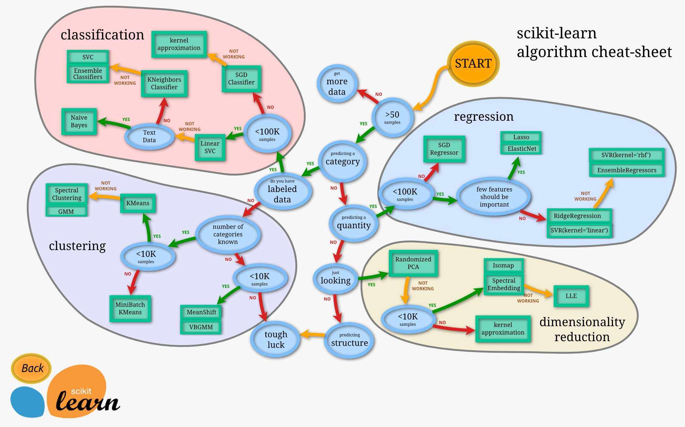

Concepts & Short Keys & Tricks & Tips & Useful links
Table of Contents
1 Data Mining
1.1 Concepts
| name | description |
|---|---|
| likelihood function | the probability of an event happens when the parameter is θ |
| MLE(max likelihood estimation) | make the probability be max to achieve a estimated value of θ |
1.2 Model Selection

3 Emacs
3.1 Keys
| short key | command(M-x) | description |
|---|---|---|
| M-` | tmm-menubar | show menubar in command line |
| C-c C-c | org-mode: evaluate current code | |
| C-c C-z | org-mode: add note | |
| C-c C-q | org-mode: add tags | |
| C-c C-d | org-mode: add deadline | |
| Shift-up | org-mode: make priority level up | |
| Shift-down | org-mode: make priority level down | |
| Shift-left | org-mode: move to previous day | |
| Shift-right | org-mode: move to next day | |
| customize-face RET cursor | change cursor color | |
| C-M-s | search-forward-regex | |
| C-M-r | search-backward-regex | |
| C-x c-l | downcase-region | change the letters in region to be small case |
| C-x left | previous-buffer | change to previous buffer |
| M-. | elpy-goto-defination | elpy: go to defination |
| C-c p f | helm-projectile-find-file | projectile: list all files in this project |
3.2 Tips&Tricks
- After enter one row in table, enter TAB will auto format this table row
- Org-mode: add loop: after the deadline, add +1d for every day, +1m for every month
- Org-mode: in code section, use exports both/none/code/results to sepecify which one for exporting
- Org-mode: force to republish unchanged files: M-: (org-publish "project name" t)
3.3 Useful links
- Draw dot-lang graph in org-mode: http://shanth.xyz/mindmap_using_graphviz_orgmode.html#orgheadline3
- Draw Python Graphs in org-mode: http://orgmode.org/worg/org-contrib/babel/languages/ob-doc-python.html
- Graphviz: http://graphs.grevian.org/
4 Docker
4.1 Shell Commands
- delete <none> images: docker rmi -f $(docker images | grep "<none>" | awk "{print \$3}")
5 Shell
5.1 Code Snippets
- judge if a command runs well or not
install_cairo=`rpm -qa cairo-devel`
if [ -n "$install_cairo"];then
echo 'RUN FAILED'
else
echo 'RUN SUCCESS'
fi
7 R
7.1 Syntax
| function | usage | description |
|---|---|---|
| require | load an package, it will continue even if the package does not exist. | |
| library | load an package, it will throw exception if it does not exist. |
8 Chrome
8.1 Tips:
- Auto open debug window of every new tab: run shell cmd: open /Applications/Google\ Chrome.app –args –auto-open-devtools-for-tabs
9 HTTP
9.1 Headers
| field | description |
|---|---|
| Request Header: Accept | specify the data type which could be accepted by client |
| Request/Response Header: Content-Type | specify the data type in current request/response |
10 SSD vs. Hard Pan
| compare item | SSD(Intel Enterprise Level) | Hard Pan |
|---|---|---|
| speed(IOPS) | 5w | 200 |
| delay(ms) | 0.1 | 8 |
IOPS: the random read and write count in one second